第五章:部署模式和工具
在这一章中，我们将围绕你的机器学习 ( ML )解决方案的部署，深入探讨一些重要的概念。我们将开始封闭ML开发生命周期的循环，并为您的解决方案走向世界打下基础。
部署软件的行为，从一个你可以向少数利益相关者炫耀的演示到一个最终会影响客户或同事的服务，是一个非常令人兴奋但经常具有挑战性的练习。这也是任何ML项目最困难的方面之一，做好它最终会决定是创造价值还是大肆宣传。
我们将探讨一些主要概念，帮助您的ML工程团队跨越有趣的概念验证与可在可扩展基础设施上自动运行的解决方案之间的鸿沟。
在本章中，我们将讨论以下主题:
- 架构系统
- 探索模式的不合理有效性
- 用集装箱装
- 在亚马逊网络服务 ( AWS )上托管自己的微服务
- 管道2.0
下一节将讨论我们如何在考虑部署的情况下架构和设计我们的ML系统。我们走吧！
技术要求
要完成本章中的示例，我们需要安装以下工具:
- AWS CLI v2
- 邮递员
- 码头工人
架构系统
无论你如何构建你的软件，在头脑中有一个设计总是很重要的。本节将强调设计ML系统时我们必须牢记的关键考虑因素。
考虑这样一个场景，你签约组织建造一所房子。我们不会简单地出去雇佣一个建筑团队，购买所有的供应品，雇佣所有的设备，然后告诉每个人开始建造。我们也不会在没有先与客户交谈的情况下，就认为自己确切知道雇佣我们的客户想要什么。
相反，我们可能会尝试详细了解客户想要什么，然后尝试设计符合他们要求的解决方案。我们可能会与他们以及了解整体设计细节的相关专家一起重复几次这个计划。虽然我们对盖房子不感兴趣(或者也许你感兴趣，但这本书里不会有！)，我们还是可以看到和软件的类比。在构建任何东西之前，我们应该创建一个有效且清晰的设计。这种设计为解决方案提供了前进的方向，并帮助构建团队确切地知道他们将处理什么组件。这意味着我们将有信心，我们所构建的将解决最终用户的问题。
简而言之，这就是软件架构的全部内容。
如果我们对ML解决方案执行与上述示例相同的操作，可能会发生以下一些情况。我们最终可能会得到一个非常混乱的代码库，我们团队中的一些ML工程师构建的元素和功能已经被其他工程师所做的工作覆盖了。我们也可能构建一些在项目后期根本无法工作的东西；例如，如果我们选择了一个具有特定环境要求的工具，但由于另一个组件，我们无法满足该工具的要求。我们还可能很难预测我们需要提前配置什么基础设施，从而导致项目内部混乱无序地争夺正确的资源。我们也可能低估了需要完成的工作量，错过了最后期限。所有这些都是我们希望避免的结果，如果我们遵循一个好的设计，这些结果是可以避免的。
为了有效，一个软件的架构应该至少为致力于构建解决方案的团队提供以下内容:
- 它应该定义解决整个问题所需的功能组件。
- 它应该定义这些功能组件如何交互，通常是通过某种形式的数据交换。
- 它应该显示该解决方案在未来如何扩展，以包括客户可能需要的更多功能。
- 它应该提供关于应该选择哪些工具来实现架构中概述的每个组件的指南。
- 它应该规定解决方案的流程以及数据流。
这是一个好的架构应该做的，但是这实际上意味着什么呢？
对于如何编译一个架构没有严格的定义。关键的一点是，它作为一种设计，建筑可以根据这种设计进行。因此，举例来说，这可能是一个带有方框、线条和一些文本的漂亮图表的形式，也可能是一个几页的文档。它可能使用正式的建模语言来编译，比如统一建模语言 ( UML )，也可能不使用。这通常取决于您操作的业务环境，以及对编写架构的人员有什么要求。关键是，它勾掉了上面的要点，并给工程师们明确的指导，告诉他们要建造什么，以及如何将它们结合在一起。
建筑本身是一个庞大而迷人的主题，所以我们不会在这里深入探讨这个问题的细节，但是我们现在将关注建筑在ML工程环境中的意义。
探索模式的不合理有效性
在本书中，我们已经几次提到，我们不应该试图重新发明轮子，我们应该重用、重复和回收更广泛的软件和ML社区的工作。这也适用于您的部署架构。当我们讨论可以被具有相似特征的各种不同用例重用的架构时，我们经常称之为模式。使用标准(或者至少是众所周知的)模式可以真正帮助您加速项目价值的实现，并帮助您以健壮和可扩展的方式设计您的ML解决方案。
考虑到这一点，我们将在接下来的几节中总结一些最重要的架构模式，这些模式在过去的几年中在ML领域变得越来越成功。
畅游数据湖
对于任何试图使用ML的人来说，最重要的资产当然是我们可以用来分析和训练模型的数据。大数据时代意味着这种数据格式的巨大规模和可变性成为一个越来越大的挑战。如果您是一个大型组织(或者甚至不是那么大)，那么将您想要用于ML应用程序的所有数据存储在结构化关系数据库中是不可行的。只是以这种格式为存储数据建模的复杂性会非常高。那么，你能做什么？
这个问题最初是通过引入数据仓库来解决的，它让您可以将所有的关系数据存储整合到一个解决方案中，并创建一个访问点。这在一定程度上有助于缓解数据量的问题，因为即使总数据量很大，每个数据库也只能存储相对少量的数据。这些仓库在设计时考虑到了多个数据源的集成。但是，它们仍然相对受限，因为它们通常将计算和存储的基础架构捆绑在一起。这意味着它们不能很好地扩展，而且它们可能是昂贵的投资，会造成供应商锁定。对ML来说最重要的是，数据仓库不能存储原始的、半结构化或非结构化的数据(例如，图像)。如果仓库被用作您的主要数据存储，这就自动排除了许多好的ML用例。现在，有了像 Apache Spark 这样的工具，我们已经在本书中广泛使用了，如果我们有可用的集群，我们就可以可行地分析和建模任何大小或结构的数据。接下来的问题是，我们应该如何储存它？
数据湖是一种技术，允许您以任何可行的规模存储任何类型的数据。有各种各样的数据湖解决方案提供商，包括主要的公有云提供商，如微软Azure 、谷歌云平台 ( GCP )，以及AWS。既然我们之前遇到过AWS ，那就重点说一下吧。
AWS中的主要存储解决方案被称为简单存储服务，或 S3 。像所有的核心数据湖技术一样，你可以有效地将任何东西装入其中，因为它是基于对象存储的概念。这意味着您加载的每个数据实例都被视为具有唯一标识符和关联元数据的对象。它允许您的S3桶同时包含照片，JSON文件。txt文件、拼花文件和任何其他数量的数据格式。
如果你在一个没有数据湖的组织中工作，这不会自动将你排除在机器学习之外，但它肯定会使它成为一个更容易的旅程，因为你总是知道如何存储你的问题所需的数据，不管是什么格式。
微服务
你的ML项目的代码库将会很小——开始只有几行代码。但是随着您的团队在构建所需的解决方案上花费越来越多的精力，这将会快速增长。如果您的解决方案必须具有一些不同的功能，并执行一些截然不同的操作，而您将所有这些都放在同一个代码库中，那么您的解决方案可能会变得非常复杂。事实上，所有组件都像这样紧密耦合且不可分离的软件被称为单片，因为它类似于可以独立于其他应用程序而存在的单个大块。这种方法可能适合您的用例，但是随着解决方案的复杂性不断增加，通常需要一种更具弹性和可扩展性的设计模式。
微服务架构是指解决方案的功能组件完全分离的架构，可能位于完全不同的代码库中，或者运行在完全不同的基础设施上。例如，如果我们正在构建一个面向用户的web应用程序，允许用户浏览、选择和购买产品，我们可能希望快速连续地部署各种ML功能。我们可能希望根据他们刚刚查看的内容推荐新产品，我们可能希望检索他们最近订购的商品何时到达的预测，我们可能希望突出显示我们认为他们将受益的一些折扣(根据我们对他们历史帐户行为的分析)。对于单片应用程序来说，这是一个非常高的要求，甚至是不可能的。然而，它很自然地属于微服务架构，就像图5.1 中的那样:
图5.1–一些ML微服务的示例
使用一些工具可以实现微服务架构，其中一些工具我们将在在AWS 上托管您自己的微服务的章节中介绍。主要思想是，您总是将解决方案的元素分离到它们自己的服务中，这些服务不是紧密耦合在一起的。
- 独立调试、修补或部署单个服务，而不是拆除整个系统。
- 避免单点故障。
- 增加可维护性。
- 允许职责更明确的不同团队拥有不同的服务。
- 加速复杂产品的开发。
像每一种架构模式或设计风格一样，它当然不是银弹，但我们在设计下一个解决方案时最好记住微服务架构。
接下来，我们将讨论基于事件的设计。
基于事件的设计
您并不总是希望按预定的批次进行操作。正如我们已经看到的，即使在前面的章节微服务中，也不是所有的用例都与按照设定的时间表从模型中运行大批量预测、存储结果并在以后检索它们相一致。如果训练运行所需的数据量不存在，会发生什么情况？如果没有新的数据来运行预测呢？如果其他系统能够在数据可用的最早时间，而不是在每天的特定时间，利用基于单个数据点的预测，会怎么样？
在基于事件的架构中，单个动作产生结果，然后触发系统中的其他单个动作，等等。这意味着流程可以尽可能早地发生，不能更早。它还允许更动态或更随机的数据流，如果其他系统也没有按预定的批处理运行，这可能是有益的。
基于事件的模式可以与其他模式混合，例如微服务或批处理。好处仍然存在，事实上，基于事件的组件允许对您的解决方案进行更复杂的编排和管理。
基于事件的模式有两种类型:
- 发布/订阅:在这种情况下，事件数据被发布到消息代理或事件总线，供其他应用程序使用。在发布/订阅模式的一个变体中，所使用的代理或总线通过一些适当的分类来组织，并且被指定为主题。一个工具的例子是 Apache Kafka 。
- 事件流:流用例是我们希望以非常接近实时的方式处理连续数据流的用例。我们可以认为这是在数据通过系统时处理数据。这意味着它不是在数据库中静态持久存储而是在流式解决方案创建或接收时进行处理。用于事件流应用的示例工具是 Apache Storm 。
图5.2 显示了一个基于事件的架构示例，该架构应用于物联网和移动设备的情况，其数据被传递到分类和异常检测算法中:
图5.2–一个基于事件的基础架构，其中不同的服务通过代理访问数据流
下一节将讨论与一次处理一个数据点相反的设计，而不是一次处理大块或大批量数据。
配料
批量工作听起来可能不是最复杂的概念，但它是机器学习世界中最常见的模式之一。
如果您需要用于预测的数据以固定的时间间隔成批出现，那么以类似的节奏安排您的预测运行可能会很有效。如果您不必创建低延迟解决方案，这种类型的模式也很有用。
这个概念也可以非常有效地运行，原因如下:
- 按预定批次运行意味着我们确切知道何时需要计算资源，因此我们可以相应地进行规划。例如，我们可以在一天的大部分时间里关闭我们的集群,或者将它们用于其他活动。
- 批处理允许在运行时使用大量的数据点，因此如果需要，您可以在批处理级别运行异常检测或聚类等操作。
- 通常可以选择数据批次的大小来优化某些标准。例如，使用大型批处理并在其上运行并行逻辑和算法可能会更高效。
批量运行ML算法的软件解决方案通常看起来非常类似于经典的提取、转换、加载 ( ETL )系统。在这些系统中，数据从一个源或多个源中提取，然后在传输到目标系统的途中进行处理，然后在目标系统上传。在ML解决方案的情况下，处理不是标准的数据转换，例如连接和过滤，而是特征工程和ML算法管道的应用。这就是为什么在本书中，我们将这些设计命名为提取转换机器学习 ( ETML )模式。ETML将在第八章中详细讨论构建一个提取转换机器学习用例。
我们现在将讨论一项关键技术，它对于使现代体系结构适用于各种平台至关重要——容器。
集装箱化
如果你开发你想部署在某个地方的软件，这是一个ML工程师的核心目标，那么你必须非常清楚你的代码的环境需求，以及不同的环境如何影响你的解决方案运行的能力。这对于 Python 来说尤其重要，它没有一个核心功能来将程序导出为独立的可执行文件(尽管有这样做的选项)。这意味着Python代码需要一个Python解释器来运行，并且需要存在于已经安装了相关库和支持包的一般Python环境中。
从这个角度来看，避免头痛的一个很好的方法是问这样一个问题:为什么我不能把我需要的所有东西都放在与主机环境相对隔离的地方，我可以把它作为一个独立的应用程序或程序来运行？这个问题的答案是你可以，而且你是通过集装箱化做到这一点的。这是一个将应用程序及其依赖项打包在一个独立单元中的过程，该单元可以在任何计算平台上有效运行。
最流行的容器技术是 Docker ，它是开源的，非常容易使用。让我们通过使用它来封装一个简单的 Flask web应用程序来了解它，该应用程序可以作为预测模型的接口，就像在示例2:预测API 部分中创建的模型一样 第1章 、ML工程简介。
接下来的几节将使用一个类似的简单Flask应用程序，它有一个预测服务端点。作为一个完整ML模型的代理，我们将首先使用一个框架应用程序，当请求进行预测时，它只返回一个简短的随机数列表。该应用程序的详细代码可以在本书的GitHub repo中找到，网址为https://GitHub . com/packt publishing/Machine-Learning-Engineering-with-Python/tree/main/chapter 05/mle IP-we b-service-main。以下讨论所需的唯一要点是，当针对/forecast端点进行查询时，Flask应用程序成功返回预测输出。
图5.3 给出了一个例子:
图5.3–查询我们的skeleton ML微服务的结果
现在，我们继续讨论如何将这个应用程序容器化。首先，您需要使用https://docs.docker.com/engine/install/的文档在您的平台上安装Docker:
- 一旦安装了Docker，您需要告诉它如何构建容器映像，这可以通过在项目中创建一个
Dockerfile来完成。Dockerfile以文本的形式指定了所有的构建步骤，因此构建映像的过程是自动化的，并且易于配置。我们现在将构建一个简单的例子Dockerfile，它将在下一节中构建，在AWS 上托管你自己的微服务。首先，我们需要指定我们正在工作的基础映像。使用一个官方Docker图像作为基础通常是有意义的，所以这里我们将使用python:3.8-slim环境来保持事物精简和平均。这个基础映像将在所有跟在FROM关键字后面的命令中使用，这意味着我们正在进入构建阶段。我们实际上可以命名这个阶段供以后使用，使用FROM … as语法:FROM python:3.8-slim as builder
将其命名为builder - 然后，在构建阶段，我们将所有需要的文件从当前目录复制到一个标签为
src的目录中，并使用我们的requirements.txt文件安装我们所有的需求(如果您想在不指定任何需求的情况下运行这个步骤，您可以使用一个空的requirements.txt文件):COPY . /src RUN pip install --user --no-cache-dir -r requirements.txt
- 下一个阶段涉及类似的步骤，但是别名为单词
app，因为我们现在正在创建我们的应用程序。注意步骤 1 和 2 对builder阶段的引用 - 我们可以像在bash环境中一样定义或添加环境变量:
ENV PATH=/root/.local:$PATH
- 因为在这个例子中我们将运行一个简单的Flask web应用程序(稍后会详细介绍)，我们需要告诉系统暴露哪个端口:
EXPOSE 5000
- 我们可以在Docker构建期间使用
CMD关键字执行命令。在这里，我们使用它来运行app.py，这是Flask应用程序的主要入口点，并将启动我们稍后将通过REST API调用的服务来获取ML结果:CMD ["python3", "app.py"]
- 然后我们可以用
docker build命令构建图像。在这里，我们创建了一个名为basic-ml-webservice的图像，并用latest标签对其进行标记:docker build -t basic-ml-webservice:latest
- To check the build was successful, run the following command in the Terminal:
docker images --format "table {{.ID}}\t{{.CreatedAt}}\t{{.Repository}}"您应该会看到类似于图5.4 中的输出:
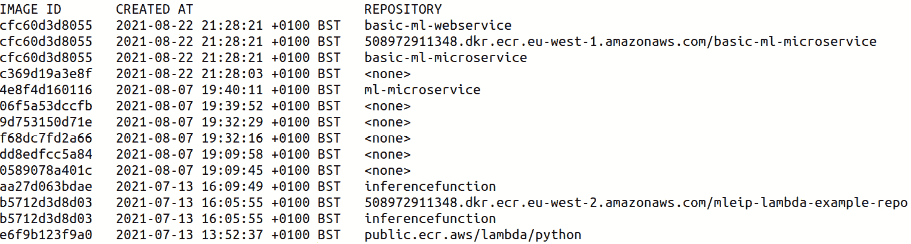图5.4–Docker images命令的输出
- 最后，您可以在终端中使用下面的命令运行您的Docker映像:
docker run basic-ml-webservice:latest
现在，您已经将一些基本的应用程序容器化，并且可以运行Docker映像，我们需要回答这样一个问题:我们如何使用它来构建一个托管在适当平台上的ML解决方案？下一节将介绍我们如何在AWS上做到这一点。
在AWS上托管自己的微服务
展示ML模型的一种经典方式是通过服务器上托管的轻量级web服务。这可能是一种非常灵活的部署模式。你可以在任何可以访问互联网的服务器上运行一个web服务(粗略地说)，如果设计得好的话，向你的web服务添加更多的功能并通过新的端点公开它通常是很容易的。
在Python中，两个最常用的web框架一直是 Django 和Flask。在本节中，我们将关注Flask，因为它是两者中较为简单的一个，并且已经针对web上的ML部署进行了广泛的讨论，因此您将能够找到大量的材料来构建您在这里所学到的内容。
在AWS上，托管Flask web解决方案的最简单的方法之一是在适当的平台上作为容器化的应用程序。我们将在这里讨论这样做的基础，但是我们不会花时间在为您的服务维护良好的web安全性的细节方面。要充分讨论这一点可能需要一整本书，在其他地方有很好的、更集中的资源。
我们将假设您已经从第2章 、机器学习开发流程中设置了您的AWS帐户。如果你不知道，那就回去重新思考你需要做什么。
我们将需要AWS 命令行界面(CLI) 。这可以通过以下命令安装在LinuxT25】x86 _ 64系统上:
$ curl "https://awscli.amazonaws.com/awscli-exe-linux-x86_64.zip" -o "awscliv2.zip" unzip awscliv2.zip sudo ./aws/install
您可以在位于https://docs.aws.amazon.com/cli/index.html的AWS CLI文档页面上找到安装和配置AWS CLI的适当命令，以及许多其他有用信息。
具体来说，按照本教程中的步骤配置你的亚马逊CLI:https://docs . AWS . Amazon . com/CLI/latest/user guide/CLI-configure-quick start . html。
文档说明了如何为各种不同的计算机架构安装CLI。在基于Linux的系统上，这意味着运行前面的命令，如文档中的图5.5 所示:
图5.5–AWS CLI文档
在下面的例子中，我们将使用亚马逊弹性容器注册中心 ( ECR )和弹性容器服务 ( ECS )来托管一个框架容器化web应用程序。在 第七章 、构建一个ML微服务实例中，我们将填写ML模型的细节，完成ML工程解决方案。
在ECS上部署我们的服务需要几个不同的组件，我们将在接下来的几个部分中逐一介绍:
首先，让我们着手将集装箱推到ECR。
推到集控室
- 我们在容器化部分的项目目录中定义了以下Dockerfile】
- 然后，我们可以使用AWS
basic-ml-microservice并将区域设置为eu-west-1，但是这个应该改为哪个区域看起来最合适:aws ecr create-repository \ --repository-name basic-ml-microservice \ --image-scanning-configuration scanOnPush=true \ --region eu-west-1
- 然后，我们可以在终端中使用下面的命令登录到容器注册中心:
aws ecr get-login-password --region eu-west-1 | docker login --username AWS --password-stdin <YOUR_AWS_ID>.dkr.ecr.eu-west-1.amazonaws.com/basic-ml-microservice
- 然后，如果我们导航到包含Dockerfile (app)的目录，我们可以运行下面的命令来构建容器:
docker build --tag basic-ml-microservice .
- 下一步是标记图像:
docker tag flask-docker-demo-app:latest <YOUR_AWS_ID>.dkr.ecr.eu-west-1.amazonaws.com/basic-ml-microservice:latest
- 然后，我们使用下面的命令将刚刚构建的Docker映像部署到容器注册中心:
docker push <YOUR_AWS_ID>.dkr.ecr.eu-west-1.amazonaws.com/basic-ml-microservice:latest
在下一节中，我们将在ECS上设置集群。
在ECS上托管
现在，让我们开始设置！
- We then create an ECS cluster with the EC2 Linux + Networking configuration. To do this, first, navigate to ECS on the AWS Management Console and click Create Cluster: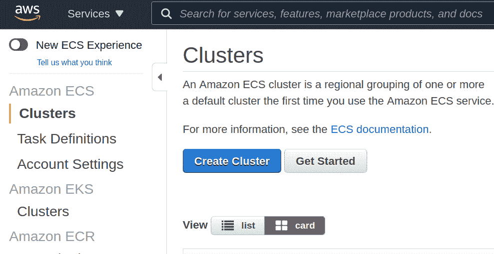
图5.6–在弹性容器服务中创建集群
- Then, at the next step, select EC2 Linux + Networking: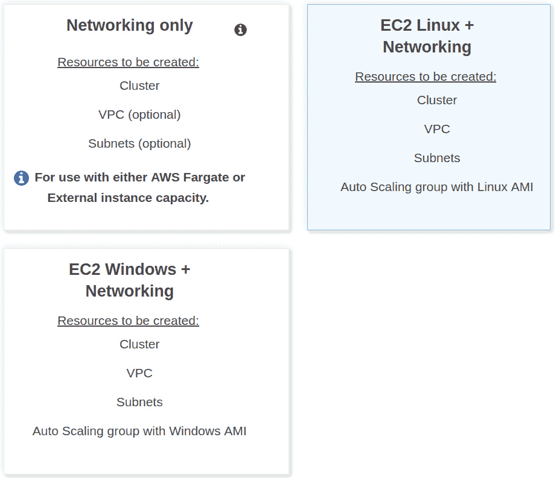
图5.7–在AWS ECS中配置我们的集群
- We are then given options for configuring our cluster. Here, we call the cluster mleip-web-app-demos (or anything we like!) and specify that the EC2 instances used be On-Demand since this is a microservice where we likely do not want to allow for downtime while we wait for spot instances. We select a relatively small machine as the instance type, a t2.micro, which is good for lightweight, general-purpose computation, and so suits a small ML prediction service quite nicely. Since this is a demo, we only need one instance and can use the default configurations for the rest of the steps: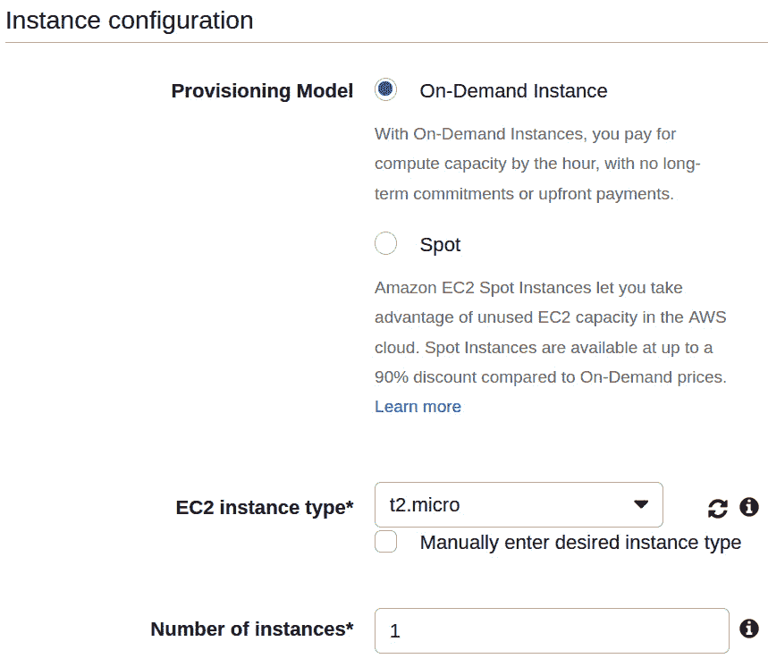
图5.8–选择我们的实例类型，并在ECS中提供模型和集群名称
- The next step is to configure the networking for our cluster. We can choose to create a new Virtual Private Cloud (VPC) and security groups for this VPC with appropriate settings or reuse previously defined ones. There is much more information on VPCs in AWS at https://docs.amazonaws.cn/en_us/vpc/latest/userguide/what-is-amazon-vpc.html: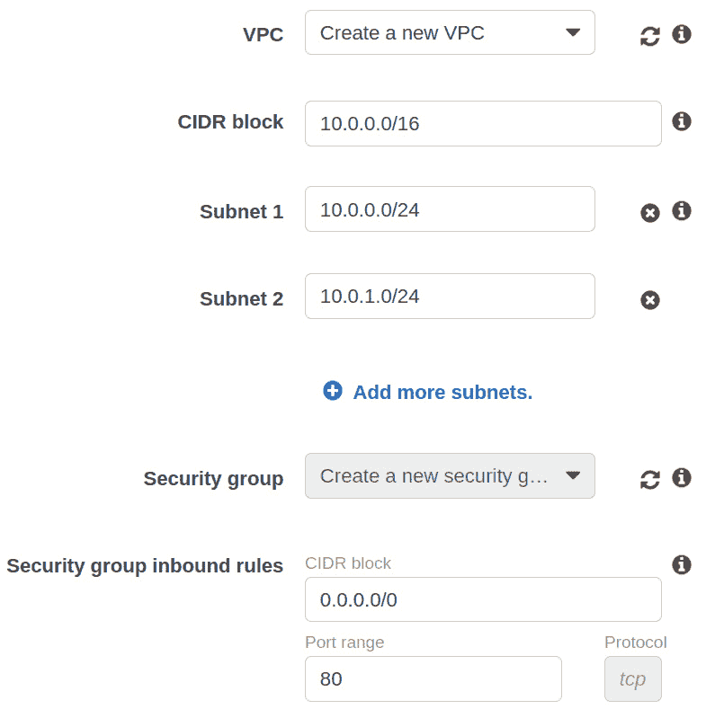
图5.9–为ECS托管的microservic设置网络。
- Once we have done this, if we click Create Cluster at the bottom of the page, we are directed to a status page that shows the progress of the cluster instantiation: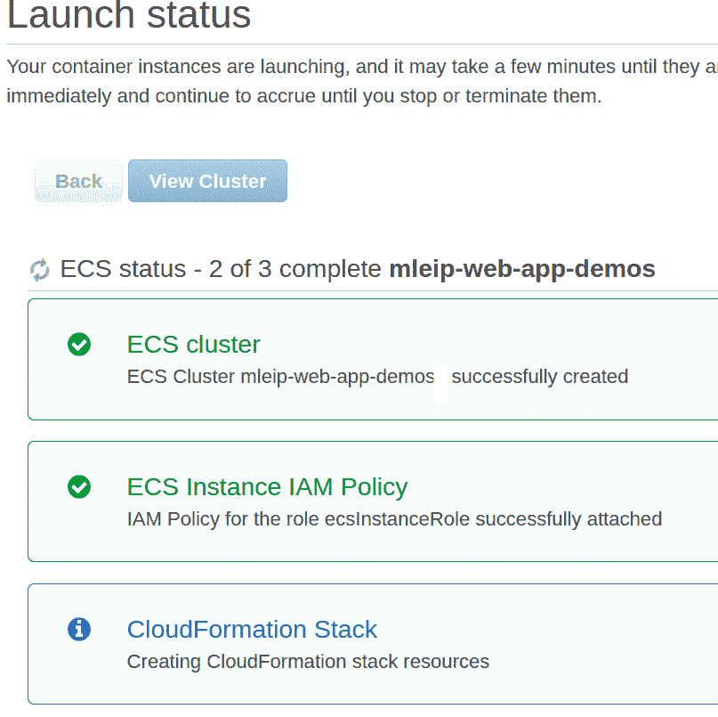
图5.10–创建我们的ECS集群
- Once complete, if we navigate back to the ECS page, we can see a summary view of the cluster we just created, as in Figure 5.10: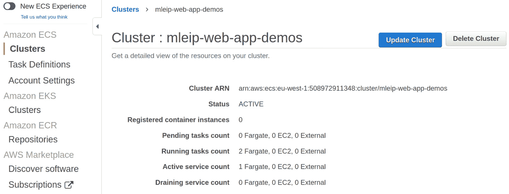
图5.11–我们现在可以访问实例化的ECS集群了
- We now need to create a task definition in the cluster. We do this by selecting Task Definitions on the left-hand side menu and then selecting Create new Task Definition, which you can see in Figure 5.11: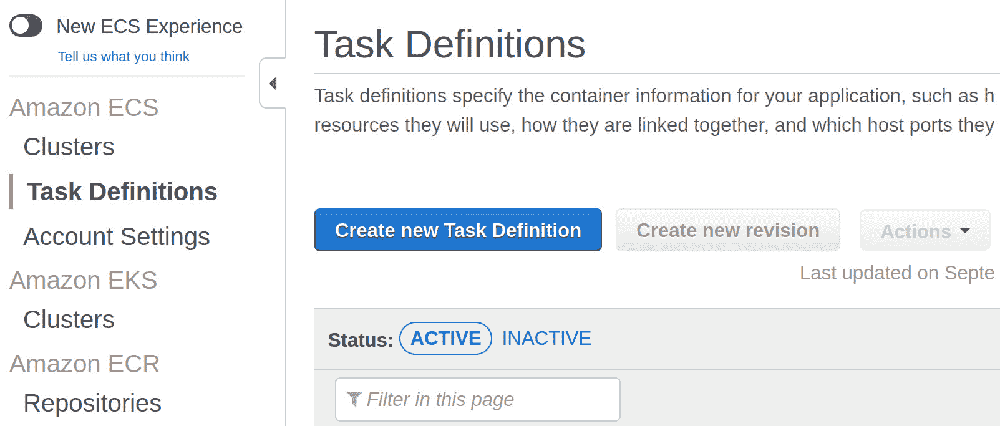
图5.12–在我们的ECS集群中定义任务
- We then select the Fargate compatibility type for the cluster, which helps us to manage a lot of the backend infrastructure without thinking about it and only pay for the compute resources that we use: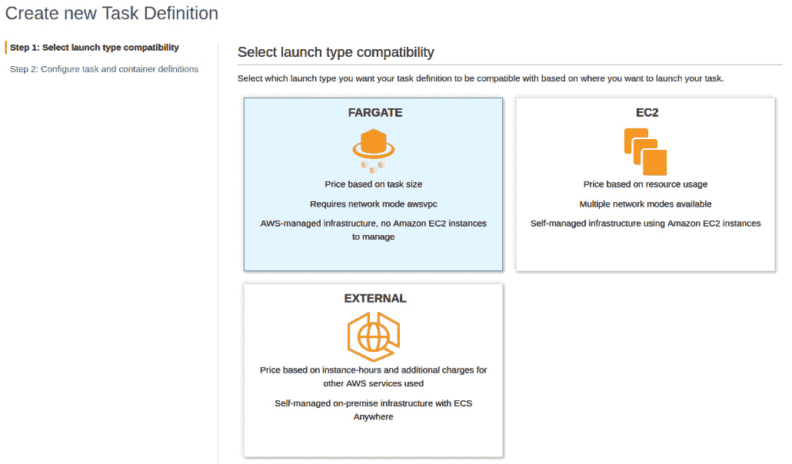
图5.13–选择Fargate作为我们的ECS任务的任务启动类型
- We then fill in some details for the task definition, as shown in Figure 5.13. For example, we will call the task definition microservice-forecast-task and we will use a task role created in the AWS Management Console called ecsTaskExecutionRole. For more details on Identity Access Management (IAM) roles, please see https://aws.amazon.com/iam/: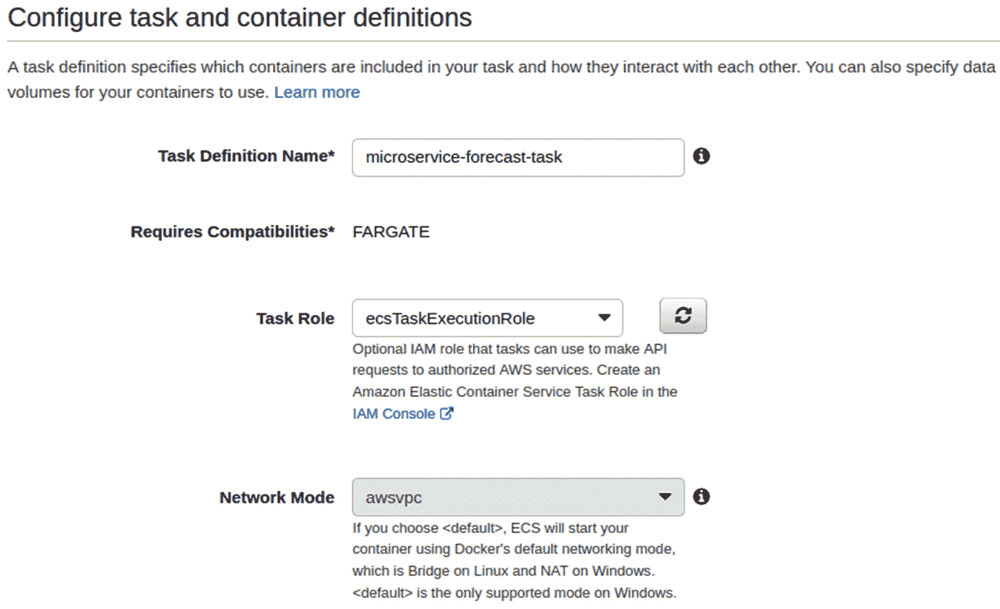
图5.14–ECS中的任务定义
- The next step is to define the task size. Here we select the lowest values of 0.5 GB and 0.25 vCPU: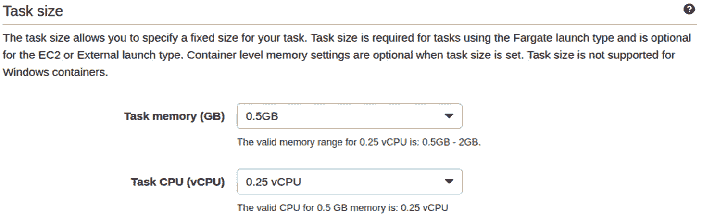
图5.15–定义ECS任务大小
- Now, we add a container to the setup by clicking the Add container option on the page and then filling in details for the container name and image URI. We can also add memory limits to the task and provide the container port we wish to expose to incoming internet traffic (here we will use port 5000). This is shown in Figure 5.15. These are the same container names and image URIs we used for pushing the container to ECR: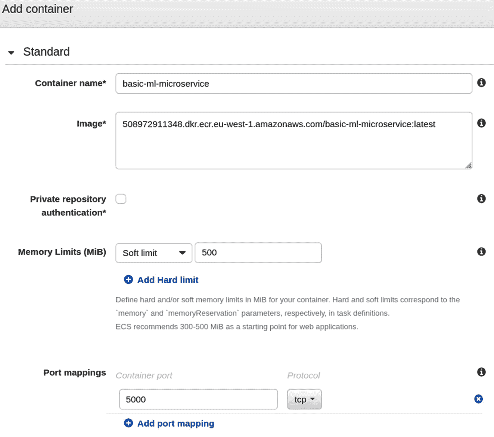
图5.16–将我们的容器添加到ECS集群
- 完成上述步骤后，我们可以选择页面底部的 Create 来创建任务。成功创建意味着当我们选择左侧的任务定义时，我们应该能够在ECS服务中看到新的任务定义。这应该类似于图5.16 :
图5.17-成功创建的ECS任务
现在，设置ECS托管解决方案的最后一步是创建服务。我们现在将介绍如何做到这一点:
- First, navigate back to the ECS page and then the Clusters section. Select the mleip-web-app-demos cluster and then the Create Service button. We are then presented with a page asking for various configuration values. In this example, we will select Launch Type to be Fargate and then give the name of the cluster and task definition to match the names of the items we have just created in the previous steps. You can see these values in Figure 5.17: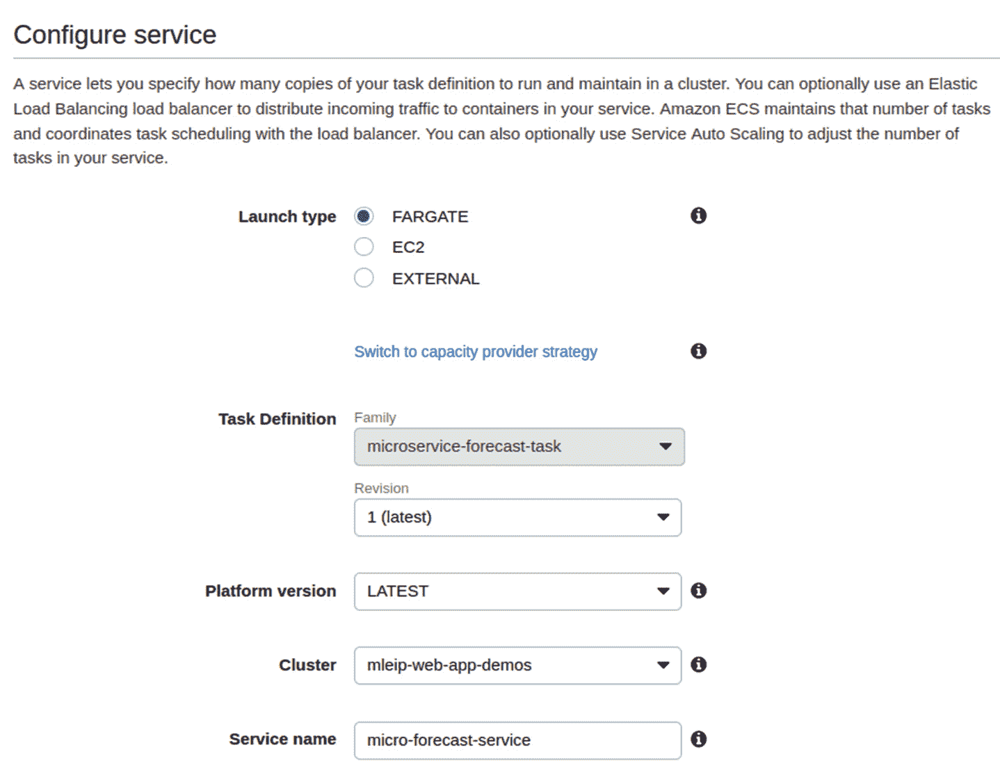
图5.18–配置我们的ECS服务
- On the same configuration page, we also have to define some values around how the service will be scaled, monitored, and deployed, as shown in Figure 5.18. For this simple demonstration, we can create a REPLICA service type that instantiates two tasks. This effectively means you will have two instances of your containerized application available at any one time to help build in some redundancy. We also define the minimum and maximum percent of our tasks, which should be healthy and running for this service during our Rolling Update type deployment: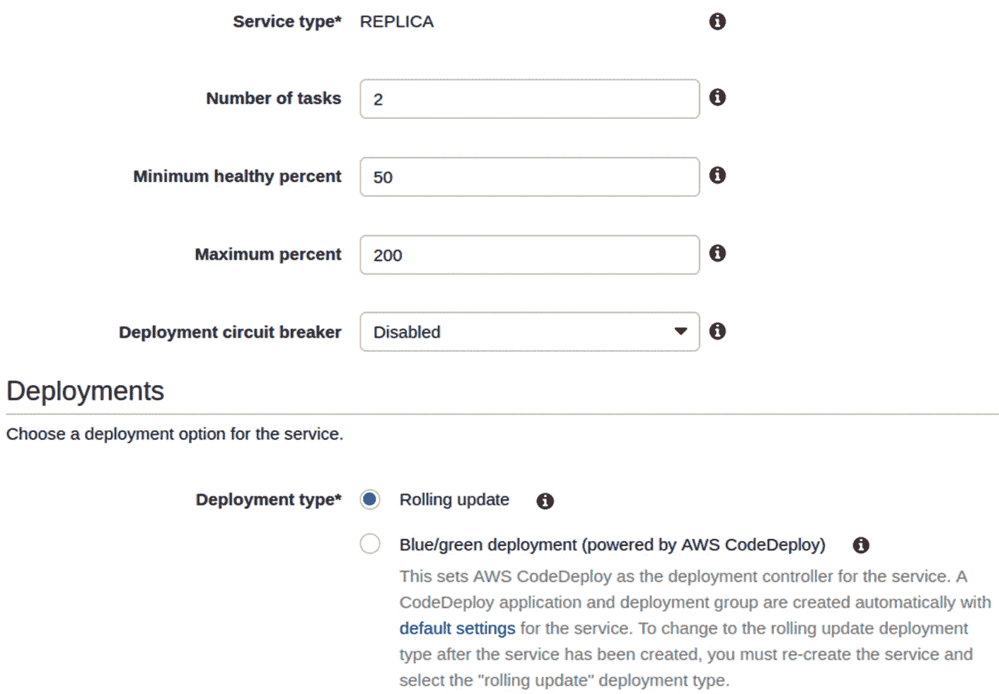
图5.19–配置服务部署和扩展行为
- There is then a section on load balancing that we must fill in. Here, select
/forecastas this is the default path that our Flask app uses. All of these value assignments are shown in Figure 5.20: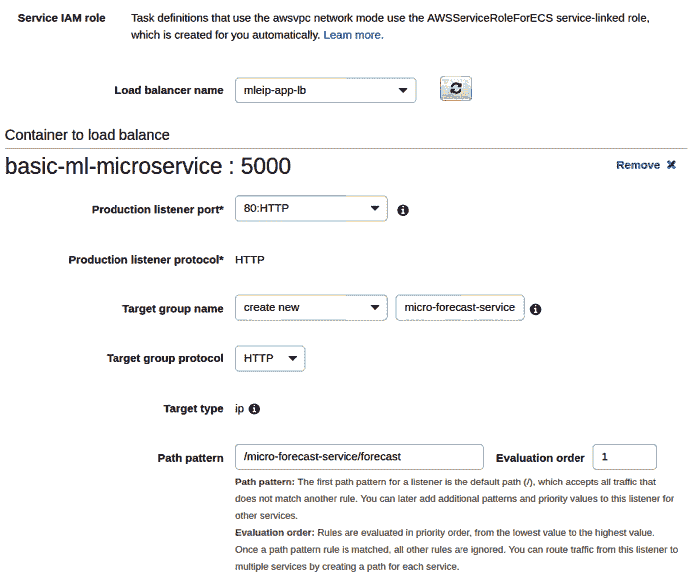图5.20–为我们的ECS服务设置负载平衡
- 你现在可以选择
/forecast。调用该解决方案的结果如图图5.21 所示:
图5.21–向我们的ECS托管微服务请求示例预测
现在让我们继续讨论如何创建负载均衡器！
创建负载平衡器
在ECS上的托管部分，我们使用了一个名为mleip-app-lb的负载平衡器。本节将帮助您了解如何在AWS中创建它，如果您以前没有这样做过的话。
负载平衡器是在多个服务器之间有效路由网络流量(如传入的HTTP 请求)以确保服务稳定性的软件。它们是任何动态服务请求的架构的重要组成部分。
幸运的是，AWS使得负载平衡器的创建相对容易，正如我们现在将看到的。接下来的几个步骤将概述如何创建一个应用程序负载平衡器，它可以用于几个不同的web应用程序的创建:
- First, we navigate to the EC2 Management Console in AWS, then we select Load Balancers in the left-hand side menu, and finally click Create Load Balancer. We should then be offered several options for different types of load balancer. Here, we will select Application Load Balancer, like in Figure 5.22: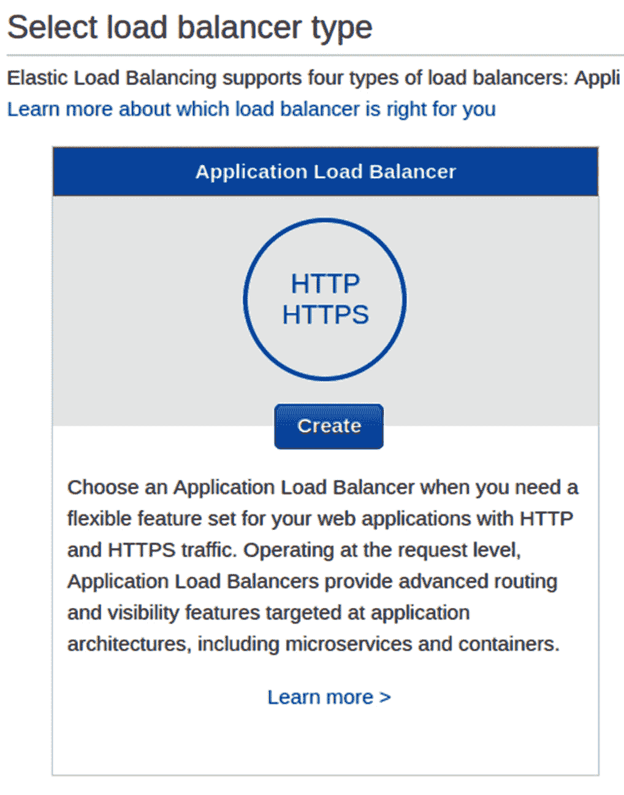
图5.22–选择在AWS EC2服务中创建应用程序负载平衡器
- The next step is to configure the load balancer. Here, we will give it the name of mleip-app-lb, which matches the load balancer used in the Hosting on ECS section. We also add a listener using the HTTP protocol on port 80. It is important that the listener created here is on the same port selected when we provided load balancing information for the creation of our ECS service. Finally, we select VPC availability zones, which again should match with the VPC zones applicable to our ECS service. This is all shown in Figure 5.23: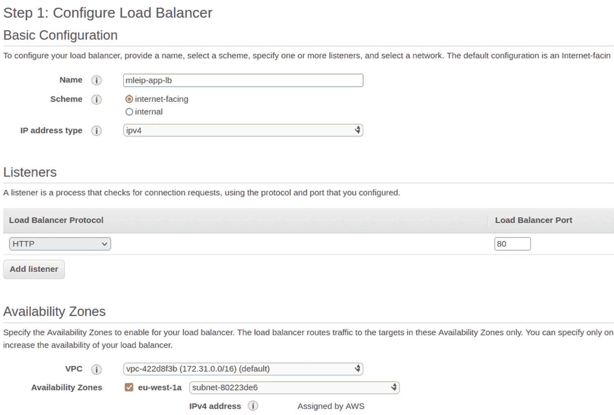
图5.23 -我们的应用程序负载平衡器的第一步配置
- We next configure the security for the load balancer. If we have only created a listener on the HTTP protocol (as we did in Step 2), then we will get a warning about not having a secure listener on the next page, which you can alleviate by using the HTTPS protocol. This requires the management of SSL certificates, which we will not cover here. For more information, see https://docs.aws.amazon.com/elasticloadbalancing/latest/application/create-https-listener.html. For now, we can move on to the next step with the HTTP protocol in place, and either create a new security group or select an existing one, as shown in Figure 5.24: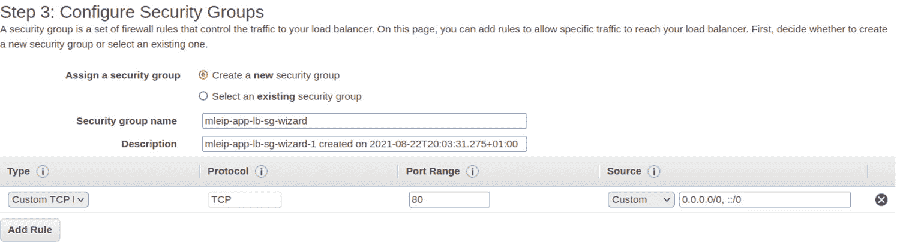
图5.24–为负载平衡器配置安全组
- The next step requires us to configure the routing of requests via the load balancer. This is done by selecting or creating a Target group (already discussed in the Hosting on ECS section) with the appropriate routing protocol and health check paths (see Figure 5.25). We create a new target group here and then later edit this to ensure routing to the appropriate service as needed: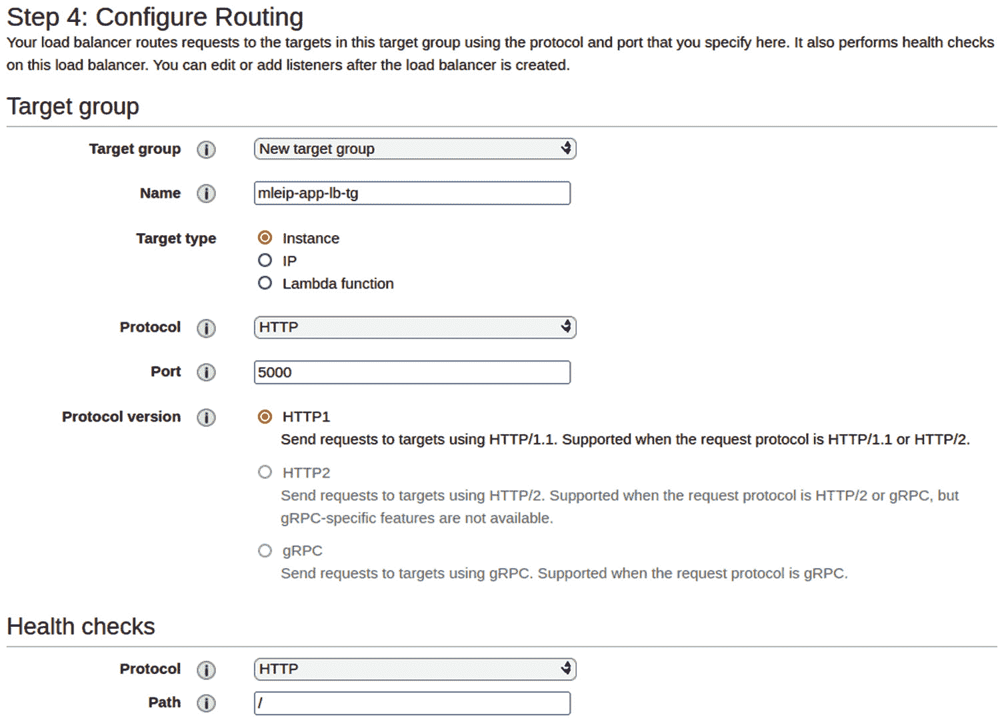
图5.25–定义负载平衡器的路由行为
- Navigating to the next step in the process asks for you to Register Targets, but this can be skipped for now and targets registered later by selecting Add Listener to your load balancer once it is created. We can then navigate to the final page, which shows a review of the load balancer you are about to create. This will look similar to Figure 5.26. Select Create to complete the process: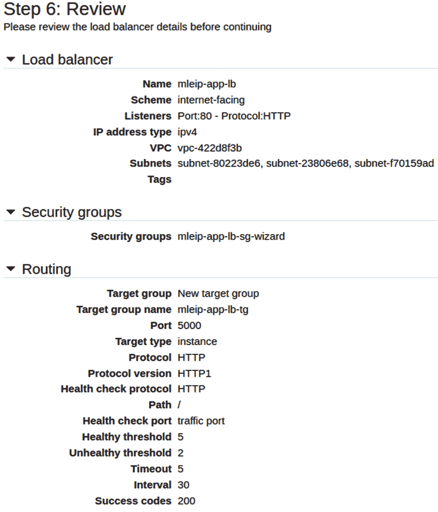
图5.26–在创建之前检查我们的负载平衡器
- 页面上应该会出现成功创建负载均衡器的确认，如图图5.27 所示:
图5.27–我们的应用程序负载平衡器的成功创建
就是这样！我们现在已经准备好了所有的部分，并连接起来，以拥有一个适合服务ML模型的工作微服务。
下一节将继续讨论我们如何使用生产就绪流水线工具来部署和编排我们的ML作业。
流水线技术2.0
在 第4章 打包中，我们讨论了将ML代码写成管道的好处。我们讨论了如何使用 sklearn 和 Spark MLlib 等工具实现一些基本的ML流水线。我们关心的管道有很好的方法来简化你的代码，并在一个对象中使用几个进程来简化应用程序。然而，我们那时讨论的一切都非常集中在一个Python文件中，不一定是我们可以非常灵活地扩展到我们正在使用的包之外的东西。例如，使用我们讨论的技术，很难创建每一步都使用不同的包，甚至是完全不同的程序的管道。它们也不允许我们在数据流或应用程序逻辑中构建太多的复杂性，就好像其中一个步骤失败了，管道失败了，就是这样。
我们将要讨论的工具将这些概念带到了下一个层次。它们允许您管理您的ML解决方案的工作流，以便您可以组织、协调和编排具有适当复杂程度的元素来完成工作。
气流
Apache Airflow 是最初由 Airbnb 在2010年代开发的工作流管理工具，并且从一开始就已经开源。它让数据科学家、数据工程师和ML工程师能够通过Python脚本以编程方式创建复杂的管道。Airflow的任务管理基于一个有向无环图 ( DAG )的定义和执行，节点为要运行的任务。Dag也在 TensorFlow 和 Spark 中使用，所以你可能以前听说过这些。
Airflow包含各种默认操作符，允许您定义可以调用和使用多个组件作为任务的Dag，而无需关心该任务的具体细节。它还提供了调度管道的功能:
- 例如，让我们构建一个Apache气流管道，它将获取数据，执行一些功能工程，训练一个模型，然后将它持久化到 MLFlow 。我们不会涵盖每个命令的详细实现，而只是简单地向您展示这些如何在一个气流DAG中结合在一起。首先，我们导入相关的气流包和我们需要的任何实用程序包:
from datetime import timedelta from airflow import DAG from airflow.operators.bash_operator import BashOperator from airflow.utils.dates import days_ago
- 接下来，Airflow允许您定义默认参数，这些参数可以被下面所有的任务引用，并且可以选择在同一级别覆盖:
default_args = { 'owner': 'Andrew McMahon', 'depends_on_past': False, 'start_date': days_ago(31), 'email': ['example@example.com'], 'email_on_failure': False, 'email_on_retry': False, 'retries': 1, 'retry_delay': timedelta(minutes=2) } - 然后我们必须实例化我们的DAG并提供相关的元数据，包括我们的调度间隔:
dag = DAG( 'classification_pipeline', default_args=default_args, description='Basic pipeline for classifying the Wine Dataset', schedule_interval=timedelta(days=1), # run daily? check )
- 然后，所有需要做的就是定义你的任务。这里，我们定义了一个初始任务，它运行一个Python脚本来获取我们的数据集:
get_data = BashOperator( task_id='get_data', bash_command='python3 /usr/local/airflow/scripts/get_data.py', dag=dag, )
- 然后我们执行一项任务，即获取这些数据并执行我们的模型训练步骤。例如，这个任务可以封装我们在 第3章 、从模型到模型工厂中涉及的一种管道类型；例如，Spark MLlib管道:
train_model= BashOperator( task_id='train_model', depends_on_past=False, bash_command='python3 /usr/local/airflow/scripts/train_model.py', retries=3, dag=dag, )
- 此流程的最后一步将采用生成的训练模型，并将其发布到MLFlow。这意味着其他服务或管道可以使用该模型进行预测:
persist_model = BashOperator( task_id='persist_model', depends_on_past=False, bash_command='python /usr/local/airflow/scripts /persist_model.py, retries=3, dag=dag, )
- 最后，我们使用
>>操作符定义任务节点的运行顺序，我们已经在DAG中定义了这个顺序。上面的任务可以以任何顺序定义，但是下面的语法规定了它们必须如何运行:get_data >> train_model >> persist_model
在接下来的章节中，我们将简要介绍如何使用 CI/CD 原则在AWS上设置气流管道。这将把我们在本书前几章中所做的一些设置和工作结合起来。
AWS上的气流
AWS提供了一个名为Apache Airflow的托管工作流 ( MWAA )的云托管服务允许您轻松、健壮地部署和托管您的air flow管道。在这里，我们将简要介绍如何做到这一点。
然后，您完成以下步骤:
- Select Create environment on the MWAA landing page. This is shown in Figure 5.28:

图5.28–AWS上的MWAA登录页面
- You will then be provided with a screen asking for the details of your new Airflow environment. Figure 5.29 shows the high-level steps that the website takes you through: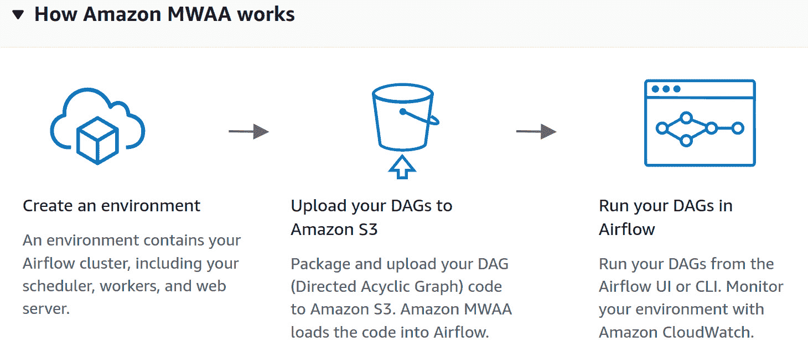
图5.29–设置MWAA环境和相关管理气流运行的高级步骤
环境细节，如图图5.30 所示，是我们指定环境名称的地方。这里我们称之为 mleip-airflow-dev-env :
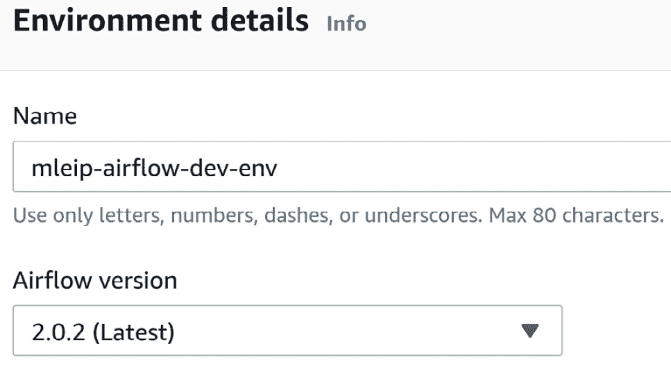图5.30–命名您的MWAA环境
- For MWAA to run, it needs to be able to access code defining the DAG and any associated requirements or plugins files. The system then asks for an AWS S3 bucket where these pieces of code and configuration reside. In this example, we create a bucket called mleip-airflow-example that will contain these pieces. Figure 5.31 shows the creation of the bucket:

图5.31–成功创建AWS S3存储桶，用于存储我们的气流代码和支持配置元素
图5.32 显示了我们如何将MWAA指向正确的桶、文件夹、插件或需求文件，如果我们也有它们的话:
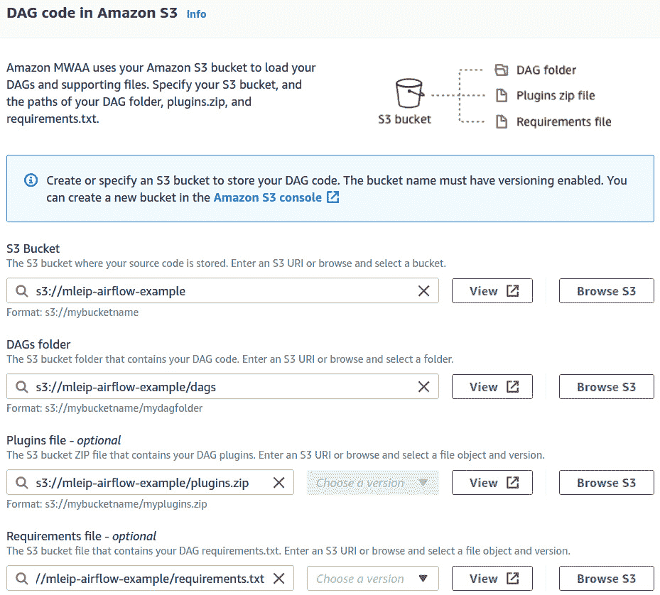图5.32–我们在MWAA实例的配置中引用了上一步中创建的存储桶
- We then have to define the configuration of the network that the managed instance of Airflow will use. This can get a bit confusing if you are new to networking, so it might be good to read around the topics of subnets, IP addresses, and VPCs. Creating a new MWAA VPC is the easiest approach for getting started in terms of networking here, but your organization will have networking specialists who can help you use the appropriate settings for your situation. We will go with this simplest route and click Create MWAA VPC, which opens a new window where we can quickly spin up a new VPC and network setup based on a standard stack definition provided by AWS, as shown in Figure 5.33: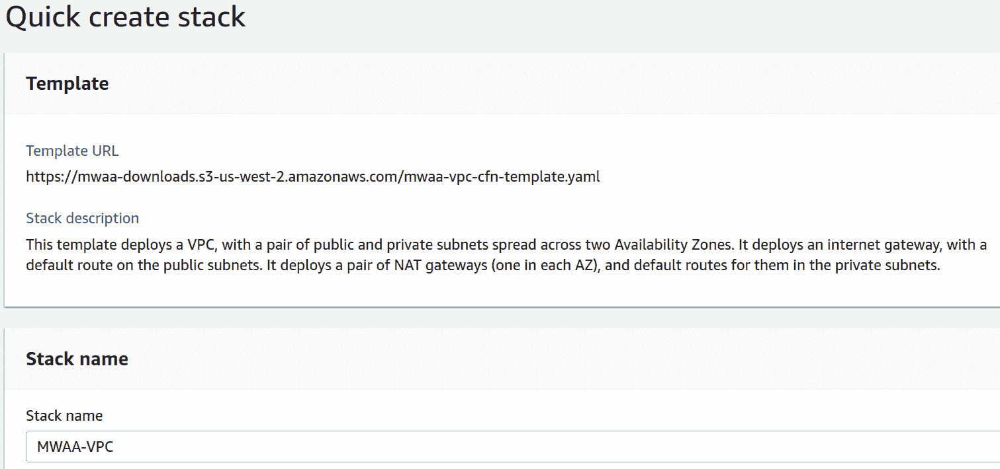
图5.33–创建新VPC的堆栈模板示例
- We are then taken to a page where we are asked for more details on networking:

图5.34–最终确定MWAA设置的网络
- Next, we have to define the Environment class that we want to spin up. Currently, there are three options. Here, we use the smallest, but you can choose the environment that best suits your needs (always ask the billpayer's permission!). Figure 5.35 shows that we can select the mw1.small environment class with a min to max worker count of 1-10. MWAA does allow you to change the environment class after instantiating if you need to, so it can often be better to start small and scale up as needed from a cost point of view: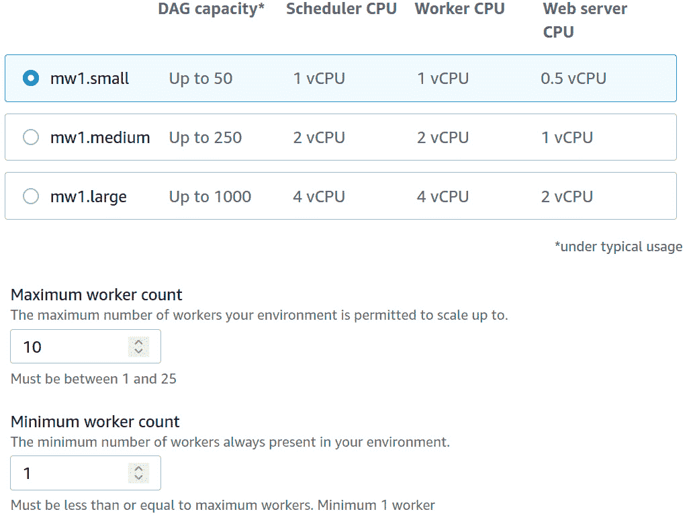
图5.35–选择环境等级和工人规模
- Now, if desired, we confirm some optional configuration parameters (or leave these blank, as done here) and confirm that we are happy for AWS to create and use a new execution role. Figure 5.36 shows an example of this (and don't worry, the security group will have long been deleted by the time you are reading this page!):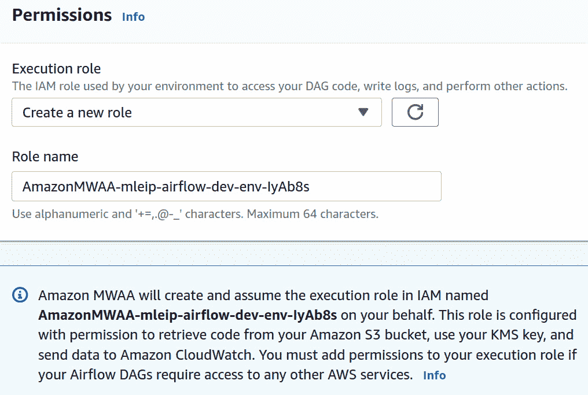
图5.36–为MWAA环境创建AWS使用的执行角色
- 下一页将在允许您创建MWAA环境之前为您提供一个最终总结。一旦你这样做了，你将能够在MWAA服务中看到你新创建的环境，如图图5.37 所示。此过程可能需要一些时间，在本例中大约需要30分钟:
图5.37–我们新创建的MWAA环境
现在您已经有了这个 MWAA环境，并且您已经将DAG提供给它所指向的S3存储桶，您可以打开Airflow UI并查看由您的DAG定义的计划作业。您现在已经部署了一个基本的运行服务，我们可以在以后的工作中构建它。
重要说明
一旦创建了这个MWAA环境，就不能暂停它，因为每小时运行的成本很低(对于上面的环境配置，每小时大约0.5美元)。MWAA目前不包含暂停和恢复环境的功能，因此您必须删除环境，并在需要时使用相同的配置重新实例化一个新的环境。这可以使用诸如 Terraform 或AWS CloudFormation 之类的工具来实现自动化，我们在这里不讨论这些工具。所以，给你一个警告——不要意外地让你的环境运行。例如，绝对不要让它运行一周，就像我可能会或可能不会做的那样。
重温CI/CD
我们在 第二章 、机器学习开发过程中介绍了CI/CD的基础知识，并讨论了如何通过使用 GitHub Actions 来实现这一点。我们现在将更进一步，开始建立CI/CD管道，将代码部署到云中。
首先，我们将从一个重要的例子开始，在这个例子中，我们将把一些代码推到AWS S3桶中。这可以通过在GitHub repo的.github./workflows目录下创建一个名为aws-s3-deploy.yml的yml文件来实现。这将是我们形成CI/CD渠道的核心。
本例中的yml文件将上传气流DAG，并包含以下内容:
- 我们使用
name的语法命名流程，并表示我们希望在主分支的推送或主分支的拉取请求时触发部署流程:name: Upload DAGS to S3 on: push: branches: [ main ] pull_request: branches: [ main ]
- We then define the jobs we want to occur during the deployment process. In this case, we want to upload our DAG files to an S3 bucket we have already created, and we want to use the appropriate AWS credentials we have configured in our GitHub secrets store:
jobs: deploy: name: Upload DAGS to Amazon S3 runs-on: ubuntu-latest steps: - name: Checkout uses: actions/checkout@v2 - name: Configure AWS credentials from account uses: aws-actions/configure-aws-credentials@v1 with: aws-access-key-id: ${{ secrets.AWS_ACCESS_KEY_ID }} aws-secret-access-key: ${{ secrets.AWS_SECRET_ACCESS_KEY }} aws-region: us-east-1然后，作为作业的一部分，我们运行将相关文件复制到我们指定的AWS S3存储桶的步骤。在这种情况下，我们还指定了一些关于如何使用AWS CLI制作副本的细节。具体来说，这里我们希望将所有Python文件复制到repo的
dags文件夹中:- name: Copy files to bucket with the AWS CLI run: | aws s3 cp ./dags s3://github-actions-ci-cd-tests --recursive --include "*.py" - 一旦我们用更新的代码执行了一个
git push命令，它就会执行动作，并将dagPython代码推送到指定的S3桶。在GitHub UI中，您将能够看到类似于图5.38 的成功运行:
图5.38–通过GitHub操作并使用AWS CLI成功运行CI/CD流程
然后，这个过程允许您成功地将新的气流服务更新推送到AWS中，由您的MWAA实例运行。这是真正的CI/CD，允许您在不停机的情况下不断更新您提供的服务。
总结
在这一章中，我们已经讨论了一些部署ML解决方案时最重要的概念。特别是，我们重点关注了架构的概念，以及在将解决方案部署到云时我们可能会用到的工具。我们讨论了现代ML工程中使用的一些最重要的模式，以及如何使用containers和AWS弹性容器注册和弹性容器服务等工具实现这些模式，以及如何使用Apache Airflow的托管工作流在AWS中创建预定的管道。我们还探讨了如何将MWAA的例子与GitHub动作联系起来，这样对代码的修改就可以直接触发正在运行的服务的更新，从而为将来的CI/CD流程提供一个模板。
在下一章中，我们将探讨如何扩展我们的解决方案，以便我们能够处理大量数据和高吞吐量计算。